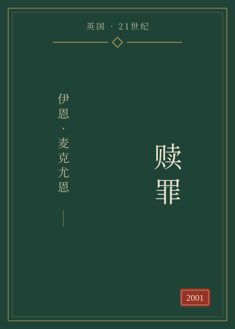
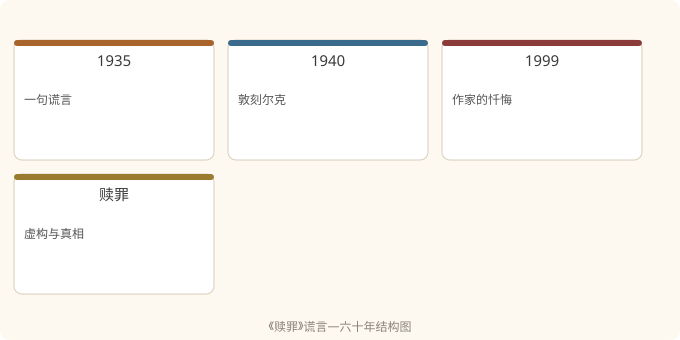

赎罪
一、基本信息
| 作者 | 伊恩·麦克尤恩 |
|---|---|
| 成书/出版 | 2001年出版（Britannica：Atonement (film 2007)——2001年出版说待核） Ian McEwan — Encyclopaedia Britannica（百科全书） |
| 国别/地区 | 英国 |
| 时代 | 现当代 · 21世纪 |
| 体裁 | 长篇小说 |
| 语言 | 英语 |

《赎罪》谎言—六十年结构图（主题·结构图）
二、创作背景
Britannica：'Atonement (film 2007) traces over six decades the consequences of a lie told in the 1930s'（《赎罪》追踪1930年代一句谎言在六十年间的后果）。
作者文体（B250）：'restrained, refined prose style accentuates the horror of his dark humor and perverse subject matter'。
三、内容脉络
1935年庄园：布里奥妮的误证拆散塞西莉亚与罗比（通说待核）。
敦刻尔克与战地医院——谎言的代价（通说待核）。
尾声：老年布里奥妮的'赎罪'书写——虚构与真相（通说待核）。
四、主要人物表
| 人物 | 身份 | 说明 |
|---|---|---|
| 布里奥妮 | 少女/作家 | 谎言之源（通说） |
| 塞西莉亚 | 姐姐 | 爱情受害者 |
| 罗比 | 仆人之子 | 蒙冤者 |
五、主题与艺术特点
- 谎言的六十年后果（Britannica）。
- 小说家的赎罪权：'虚构'能否赦免（通说待核）。
- 敦刻尔克与庄园的两极（通说）。
六、影响与评论
- Britannica：《赎罪》列为麦克尤恩最知名小说之一；2007年改编电影（B250）。
Ian McEwan — Encyclopaedia Britannica（百科全书） - 当代英语小说的'元虚构'代表作（通说待核）。
Ian McEwan — Encyclopaedia Britannica（百科全书）
七、阅读建议
难点
- 三部结构与'尾声'的元虚构翻转。
- 敦刻尔克撤退历史背景。
- 《赎罪》（上海译文出版社，通说待核）。
对照《长日留痕》：英伦记忆的两代书写。
八、待核实
- 2001年出版（Jonathan Cape说）核对。
- 布里奥妮三部结尾版本差异核对。
- 电影乔·怀特导演（2007）细节待核。